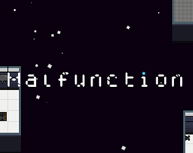
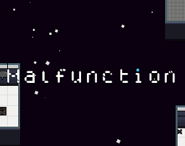

Boundless Blade
Unreal
Game Jams
Boundless Blade is a 2D top down endless horde game that was made for our Sophomore Studio 1 class. Our main prompt was to use something other than a regular input system, so we went with a drawing tablet. It was made by a 6 person team where I was the sole programmer. I was in charge, obviously as the only programmer, of implementation of practically everything. It gave me a good chance to really dig deep and gain new knowledge on subject matter that I had not really touched on before.
Working with this team I was really able to understand all aspects of the game development pipeline while implementing good project management practices through the use of Agile. Managing my own sections of the taskboard, making and refining my own documentation, and being able to collaborate respectfully with all of the other disciplines really gave me a path to grow.
The highlight of this project was the upgrade and rarity systems that were used to give a depth to user progression. It included 4 rarity systems as well as a active and passive upgrades that allowed the player to grow stronger over time. With this system, I was really able to understand how to tailor to designers needs and really bring a new foundational collaborative aspect to system design and implementation.
Unreal is an engine that I have been working hard in to really increase my knowledge everyday to give myself a wider range of things that I can make. My general understanding of C++ has given me a good foundation, however being able to use it in tandem with Blueprints and Unreals API to create unique gameplay experiences is something I have been striving to do.
One example of my unreal prowess is this first person lock system. This lock system was inspired by games such as Dead By Daylight, Among Us, and Outlast Trials. It incorporates different elements of a *mini* gameplay loop in a well organized and polished system that leaves room for expansion.
One game jam I have done in recent time was for the UNC Chapel Hill game jam for college students. This jam was a week long and was what I spent a majority of my time on during Spring Break of 2023. The prompt was "Dont do that!" and I made a 2D top down puzzle game called Malfunction in which I actually won the jam.
Although the general gameplay was simple, I really tried using this jam as a time for testing out new things such as particle systems and story branching which proved to be a fun task. The game ended up having 3 different endings based off a point system and the game was well polish and well recieved.
Game Jams have been a great way to really diversify my use of technologies and different techniques. Having to complete a project under short time constraints really tested my time and project management skills as well as my technical abilities to make sure I can come away with a good product.

 
